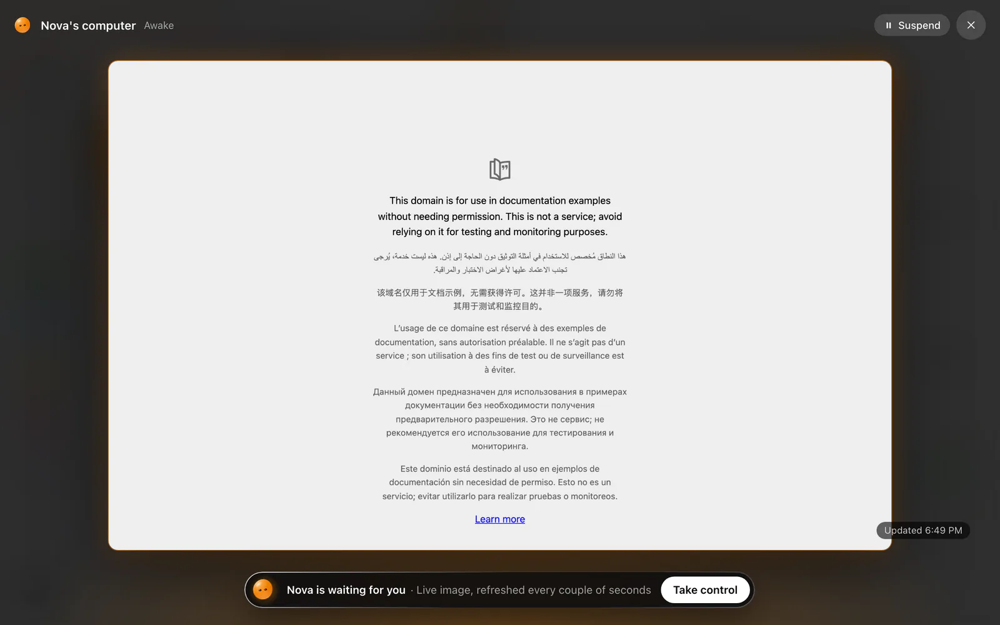

Their own computer
Watch it work. Take over any time.
Every bot has a Linux desktop of its own, with a browser, a terminal and files that stay. Open the live view to watch it click and type, or take control yourself: the bot pauses until you hand it back, then it looks again before it acts.
- Every action is a line in the activity feed, and you can replay it.
- Each computer is its own container, apart from your own files. Docker setups differ, so the install help shows how to keep it from reaching your home network.
